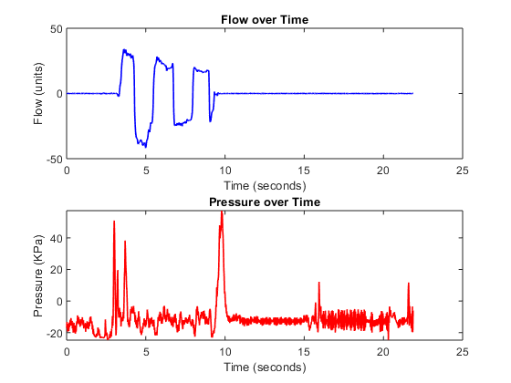

Contents
filename = '';
my_tdms_struct = TDMS_getStruct(filename);
Pressure = transpose(my_tdms_struct.Data.Pressure.data);
Flow = transpose(my_tdms_struct.Data.Flow.data);
Time = transpose(my_tdms_struct.Data.Time.data);
sensorDS = table(Time, Flow, Pressure);
Convert Time to Double
for i = 1:length(Time)
t(i,1) = str2num(Time{i}(1:2))*60*60+str2num(Time{i}(4:5))*60+str2num(Time{i}(7:8));
t(i,1) = t(i,1) + str2num(Time{i}(10:13))*1e-4;
end
start = t(1);
for i = 1:length(t)
t(i) = t(i) - start;
end
Plots of Flow and Pressure vs Time
figure(1)
subplot(2,1,1)
plot(t,Flow,'b','LineWidth',1.2)
xlabel('Time (seconds)')
ylabel('Flow (units)')
title('Flow over Time')
subplot(2,1,2)
plot(t,Pressure,'r','LineWidth',1.2)
xlabel('Time (seconds)')
ylabel('Pressure (KPa)')
title('Pressure over Time')

Plot of Pressure vs Flow